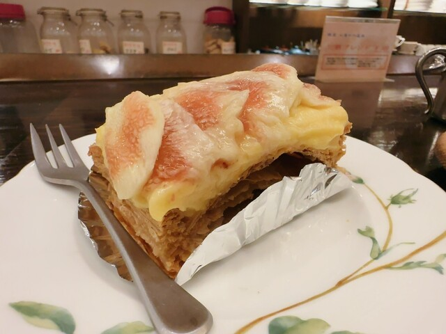

沼津・大手町で40年余り。地下に佇む隠れ家のような老舗喫茶です。

レトロであたたかな店内で、長年変わらぬ手作りケーキと完熟珈琲を。慌ただしい日常を離れ、ほっと一息つける場所です。
サクサクのパイ生地に、カスタードと生クリームをたっぷり。長年愛される看板。
いちごショート、レアチーズなど。日替わりの手作りケーキが並びます。
ケーキに寄り添う、まろやかな一杯。ゆっくりとした時間を。
幾層にも重なるサクサクのパイ生地に、なめらかなカスタードと生クリームをたっぷり。40年の歴史を持つ、フレィバァを代表する一品です。
メニューを見る
沼津駅南口より徒歩約4分。駅前郵便局の斜向かい、ビル地下の隠れ家でお待ちしています。
アクセス・店舗情報